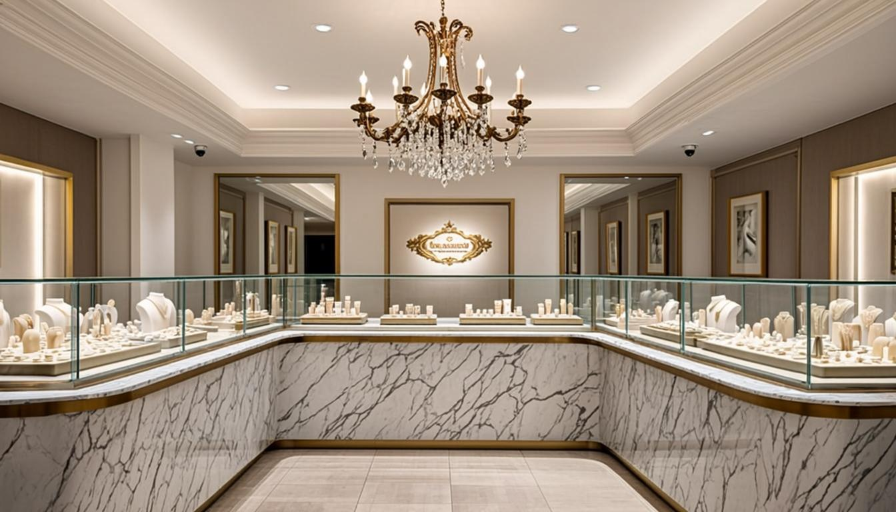
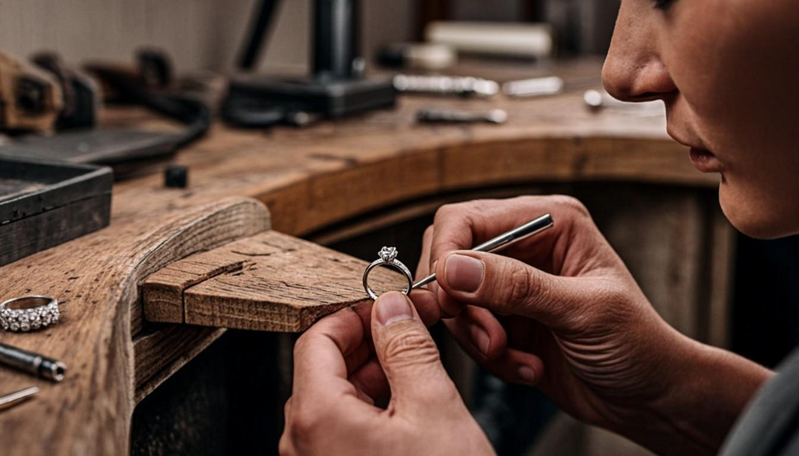
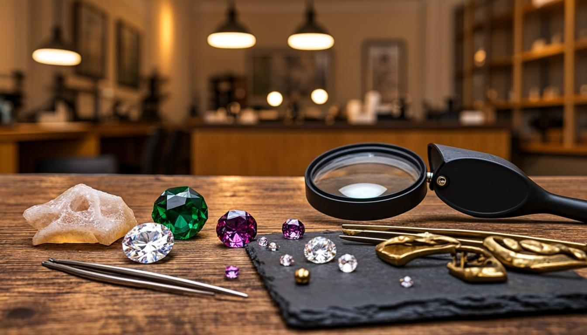
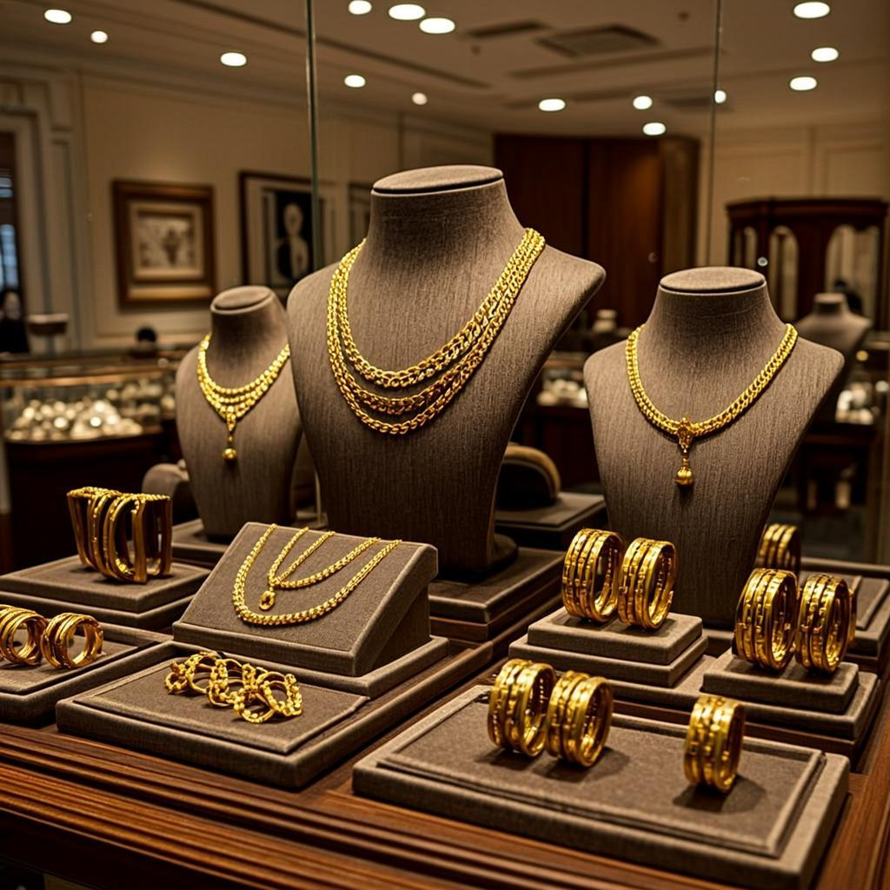
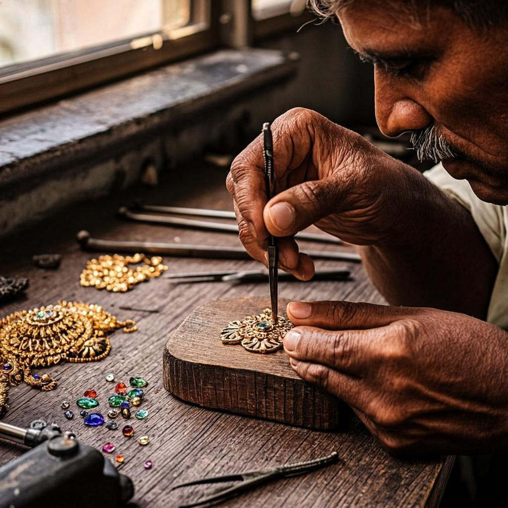
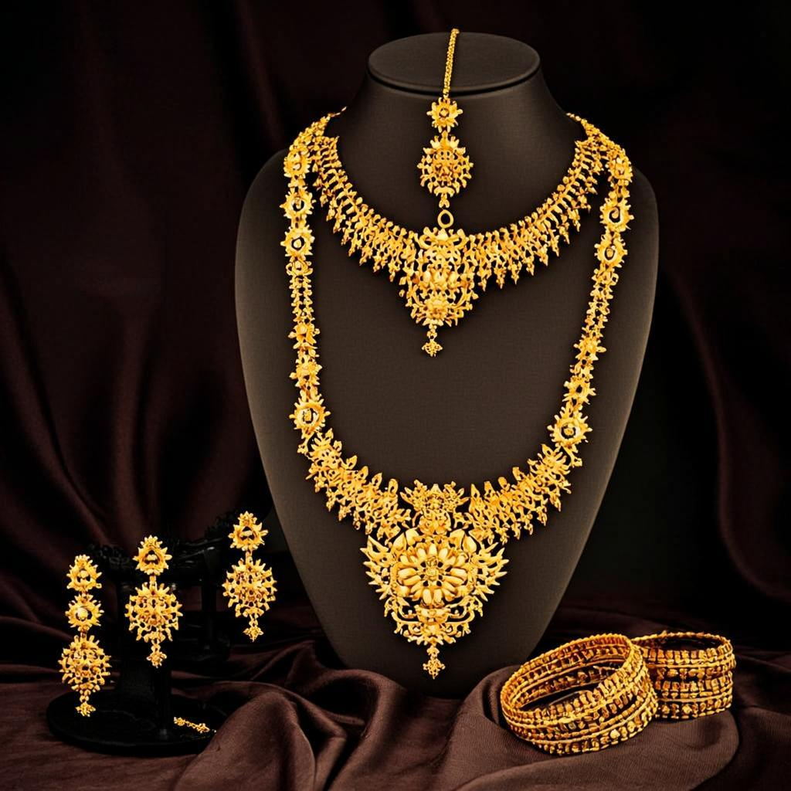

Our Heritage
Our Story
Since its humble beginning on 26th January 2004, Deni Jewellers has been built on a foundation of trust, hard work, and customer satisfaction.Founded by L. Isaac, Deni Jewellers started as a small jewellery shop in a rented space with a simple vision — to provide quality jewellery and honest service to every customer. Through dedication, integrity, and a commitment to building lasting relationships, the business steadily earned the trust and support of the local community.
Over the years, what began as a modest venture grew into a trusted name for jewellery. With the continued encouragement and loyalty of our customers, Deni Jewellers reached a significant milestone in 2022 by opening a spacious new showroom, marking a new chapter in our journey.As we continue to grow, our mission remains unchanged: to serve every customer with honesty, transparency, and care while creating jewellery that becomes a cherished part of life's most precious moments.
Deni Jewellers – Since 2004 From a small rented shop to a trusted jewellery destination, made possible by the unwavering support of our customers. 💛✨


Artistry
At the heart of every DENI JEWELLERS creation lies the extraordinary skill of our master artisans. Each piece undergoes a meticulous journey from concept to completion, often taking weeks or even months to perfect. Our craftspeople employ techniques passed down through generations, from the delicate art of hand-engraving to the precision of micro-pavé setting, ensuring that every detail is executed to the highest possible standard.
We source only the finest materials from ethical suppliers around the globe. Our diamonds are hand-selected for their exceptional cut, colour, and clarity, while our coloured gemstones are chosen for their vivid hue and remarkable brilliance. Every metal is refined and alloyed in-house to achieve the perfect balance of purity and durability, resulting in pieces that are as enduring as they are beautiful.
Our commitment to craftsmanship extends beyond the finished piece. We provide comprehensive aftercare services, including professional cleaning, inspection, and restoration, to ensure that your DENI JEWELLERS jewellery remains as radiant as the day you first wore it.
Our Promise
Quality is not simply a standard at DENI JEWELLERS; it is an obsession. Every piece of jewellery undergoes rigorous inspection at multiple stages of the creation process. From the initial selection of raw materials to the final polish, our quality control team examines each element with meticulous care, ensuring that only pieces of exceptional calibre bear the DENI JEWELLERS name.
All our diamonds are certified by internationally recognized gemological laboratories, including the GIA and IGI, providing you with complete confidence in the authenticity and quality of your purchase. Our coloured gemstones are accompanied by certification from reputable gemological institutes, detailing their origin, treatment, and characteristics.
We also stand behind our work with a comprehensive lifetime warranty that covers manufacturing defects and includes complimentary annual inspections. Our commitment to quality assurance means that when you choose DENI JEWELLERS, you are choosing jewellery that will endure for generations.

22+
Years of Excellence
2K+
Happy Clients
500+
Unique Designs
25+
Master Artisans
Heritage & Tradition
Jewellery in India is not mere ornamentation — it is a language of love, a marker of identity, and a bridge between generations. At DENI JEWELLERS, we honour this profound cultural legacy by creating pieces that are steeped in meaning and tradition. Every design draws inspiration from the rich tapestry of Indian art — from the temple sculptures of Tamil Nadu to the Mughal floral motifs that have adorned royalty for centuries.
Our heritage collections are a living tribute to the artistry of India's past, reimagined for the modern wearer. We believe that wearing a piece of DENI JEWELLERS is not just about adorning yourself with beauty — it is about carrying forward a legacy that has been cherished for millennia. Each piece connects you to the artisans who shaped it, the traditions that inspired it, and the stories it will help you tell.
Whether it is a Lakshmi kasu haram passed down as a bridal heirloom or a delicate silver jhumka that celebrates everyday grace, our jewellery is designed to become part of your family's story — treasured today and by generations to come.


The Hands That Create
Behind every DENI JEWELLERS masterpiece is a team of artisans whose skill has been refined over decades — and in many cases, passed down through families for generations. Our master goldsmiths, stone setters, engravers, and filigree artists are the heart and soul of our brand, and we are deeply proud of the human expertise that defines every piece we create.
Each artisan specialises in a specific discipline of jewellery making. Our engravers spend years perfecting the delicate temple motifs that adorn our bangles, while our stone setters work under microscopes to position each diamond and gemstone with micrometre precision. The filigree artists create intricate wire patterns that seem almost impossible to achieve by hand, yet they do so with a calm confidence that comes from mastery.
We invest in our artisans through continuous training, fair wages, and a collaborative environment where traditional techniques are respected and innovation is encouraged. When you hold a DENI JEWELLERS piece, you are holding the culmination of countless hours of dedicated, passionate human craftsmanship — something no machine can ever replicate.
Bridal Excellence
A bride deserves nothing less than perfection, and at DENI JEWELLERS, our bridal collection is crafted with this belief at its core. Our bridal sets are designed to transform your wedding day into a celebration of timeless beauty, featuring coordinated pieces that complement each other flawlessly — from the grand haram that graces your neck to the delicate maang tikka that crowns your forehead.
Every bridal piece is made-to-order, allowing us to customise weights, sizes, and design details to perfectly match your vision. Our bridal consultants work closely with each family, understanding their traditions, preferences, and budget to curate a collection that feels both personal and magnificent. We offer complete bridal sets including necklaces, harams, bangles, earrings, nose pins, vanki, and maang tikka — all harmoniously designed.
With over 3,000 happy brides and counting, DENI JEWELLERS has become the most trusted name in wedding jewellery across South India. Let us make your special day as radiant and unforgettable as you deserve.

Every piece is crafted with honest materials, fair pricing, and transparent certification. What you see is exactly what you get — no compromises, no shortcuts.
We believe that true luxury lies in the human touch. Every piece is handcrafted by master artisans who pour their skill, passion, and creativity into every detail.
We create jewellery that transcends trends — pieces designed to be worn, treasured, and passed down through generations as cherished family heirlooms.